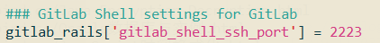
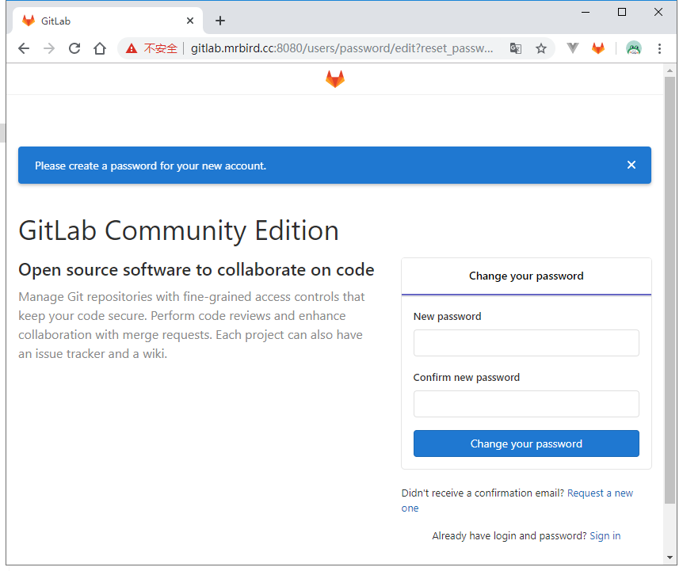
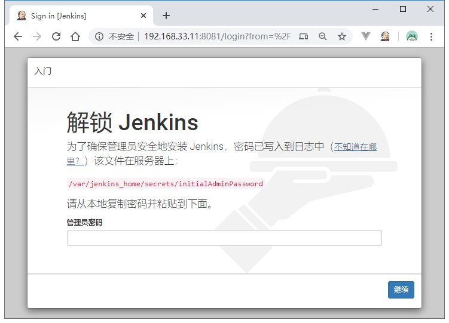
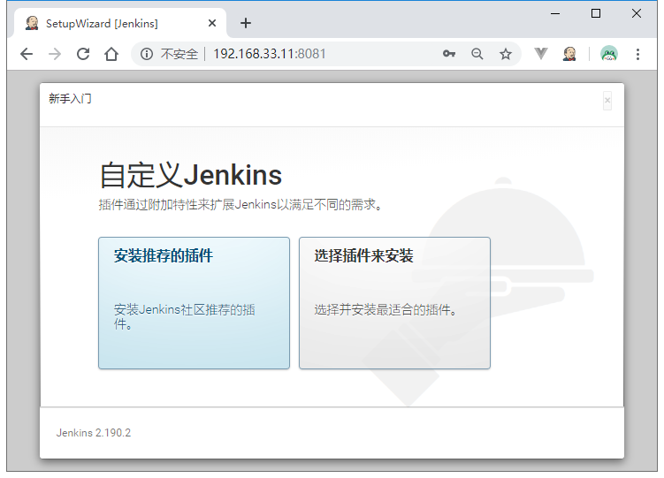
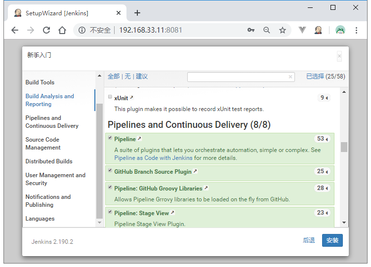
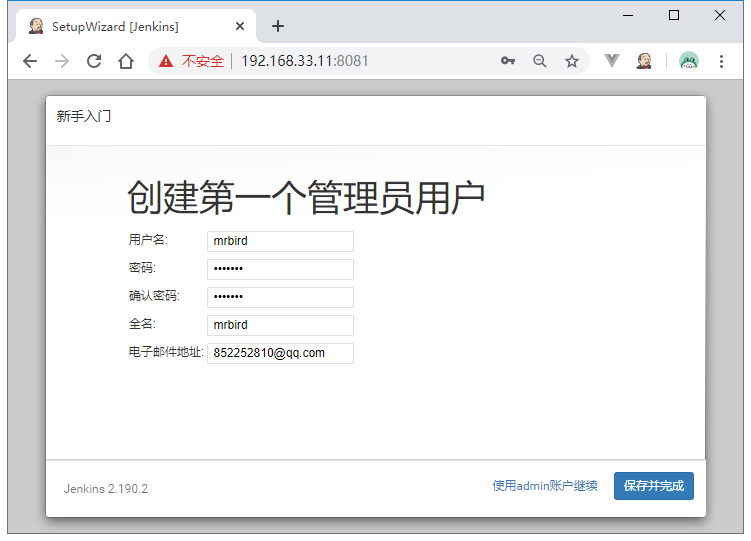
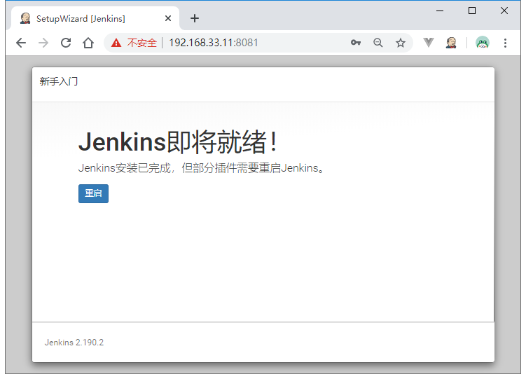
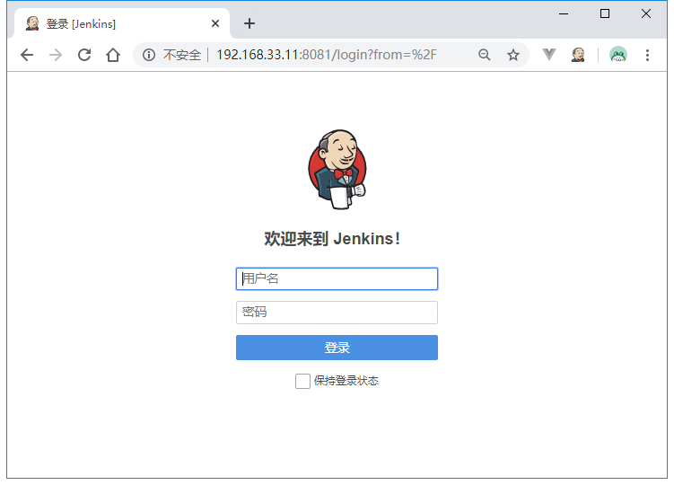

安装GitLab
使用Docker安装GitLab，拉取官方镜像：
1 | docker pull gitlab/gitlab-ce:latest |
镜像有点大，耐心等待。拉取好后，编写一个启动脚本：
1 | cat <<EOF > run_gitlab.sh |
--hostname gitlab.mrbird.cc绑定域名，端口映射了下，防止和宿主机冲突。
执行chmod u+x run_gitlab.sh添加可执行权限，然后运行sh run_gitlab.sh启动GitLab。
执行启动脚本后，使用docker logs -f gitlab查看启动日志，第一次启动比较慢，当日志定时输出/metrics内容时说明GitLab已启动完毕：
1 | ==> /var/log/gitlab/gitlab-rails/sidekiq_exporter.log <== |
启动和，修改gitlab.rb文件：
1 | vim /gitlab/config/gitlab.rb |
开启这段配置，并且端口号改为上面指定的2223：

然后执行sh run_gitlab.sh重启即可。
重启后，在虚拟机和windows里添加hosts解析：
1 | 192.168.33.11 gitlab.mrbird.cc |
使用浏览器访问http://gitlab.mrbird.cc:8080/：

GitLab还是比较占内存的，在安装GitLab前请确保内存够用🌚：
1 | docker stats gitlab |
安装Jenkins
拉取Jenkins Docker镜像：
1 | docker pull jenkinsci/blueocean:latest |
编写启动脚本：
1 | cat <<EOF > run_jenkins.sh |
添加可执行权限：
1 | chmod u+x run_jenkins.sh |
启动Jenkins：
1 | sh run_jenkins.sh |
当启动日志输出如下内容时，说明jenkins已成功启动：
1 | ************************************************************* |
其中6ddc10e56b574f27a360986f84da19fc为Jenkins的密码，该密码也可以在Jenkins容器的/var/jenkins_home/secrets/initialAdminPassword文件找到。
使用浏览器访问http://192.168.33.11:8081/：

输入上面的密码，进入：

点击“选择插件安装”，然后Pipelines and Continuous Delivery一栏中的所有插件都勾选上：

然后点击安装即可，安装结束后，接着创建用户：

点击重启：

用刚刚创建的用户登录即可：
